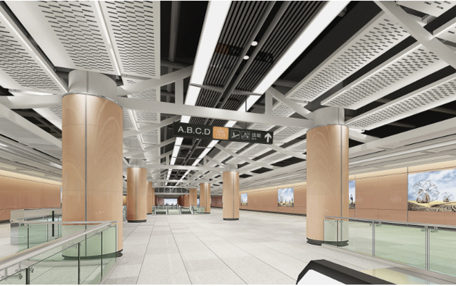

“大厝迎宾”打造我们自己的地铁站
发布时间：2016年10月24日地铁1号线过老城穿新区一路建筑元素和文化符号鲜明，站点设计强调设计与建筑空间融合，既要高度满足地铁的公共交通运输的基本功能，又要能贯穿全线传统文化内涵。 地铁1号线站点设计以大厝迎宾和一线一景为特点，提取传统文化符号与现代工业化的材料相结合，打造高效快捷、简介素雅、舒适经典和具有地域特色的车站公共空间。
整体风格：造型简洁、色彩素雅、材质轻透。
设计目标：
表现手法：
设计原则：
设计主题：

设计说明：厦门地铁1号线穿越老城区、新城区及集美嘉庚风貌保护区，建筑元素及文化符号鲜明。厝是闽南地区特有的建筑形式，地铁装修提炼 闽南建筑中标志性的建筑符号，通过现代的设计手法将闽南古厝的“人字梁”结构，